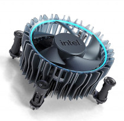
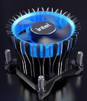
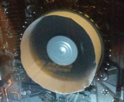
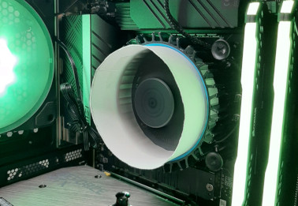

In 2022, Intel redesigned their stock CPU coolers to make them beefier, more performant, but primarily better looking. Still, it was a necessary upgrade, as their previous line was not adequate at cooling 12th gen CPUs.
Looking at the images, I noticed a difference between their i5 cooler (on the left) and their i9 cooler (right): the i9 cooler had a blue plastic cowl around the fan, while the i5 had some weird open-air plastic fin design.
I created a cowl out of a piece of paper, taping the ends together to form a cylinder. It took finesse, but I managed to get the paper fitting snugly inside the cooler without the fan hitting it. No glue needed!
In fact, I did more than just that. I actually tested a few cowls of different heights, from under an inch, to over three inches in height. Below are the results of testing using Blender as my benchmark.
| Cowl Height | Max CPU temp | Relative Noise |
|---|---|---|
| No cowl | 80 C | +8 Db |
| 1 inch | 85 C | +0 Db |
| 1.4 inches | 82 C | +1 Db |
| 1.7 inches | 80 C | +2 Db |
| 2 inches | 80 C | +4 Db |
| 3+ inches | 80 C | +8 Db |
I was amazed at how quiet short cowls made the cooler. To give you an idea of how each sound, here is the stock noise, sounding like a dental drill:
And here is the 1 inch cowl noise, sounding like a windy day:
The difference could be heard at both full-load and idle.
Unfortunately, the shortest cowl came with noticeably worse performance; presumably it was recirculating too much hot air. Still, there is a happy medium: 1.7 inch cowls cool as well as Intel's design, while being quieter, though your results may vary depending on your case.
If you want a great cooler, just buy one. Intel's offerings will never stack up to aftermarket models (even the cheap $20 ones). But if you're like me and are building a budget PC, you may hear an improvement using this paper mod. The process is quick, free, and low-risk, albeit higher risk than not doing so (and I'm sure Intel wouldn't approve). For that reason, I'll leave it up to you to decide.
Well I'm amazed, it actually works really well.
Incredible, thanks a lot for that tip !!
